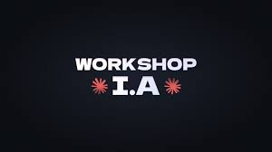

Feira de Tecnologia e Inovação
O evento Tech Future reúne estudantes, programadores e empresas para apresentar novidades do mundo da tecnologia. Entrada totalmente gratuita para estudantes.
Data do evento:
O evento Tech Future reúne estudantes, programadores e empresas para apresentar novidades do mundo da tecnologia. Entrada totalmente gratuita para estudantes.
Serão realizados workshops com foco em desenvolvimento web, inteligência artificial e robótica educacional. Vagas limitadas para os workshops.

Horário:
Palestra abordando conceitos básicos de IA e aplicações no dia a dia.
Horário:
Apresentação sobre HTML semântico, CSS moderno e boas práticas de desenvolvimento web.